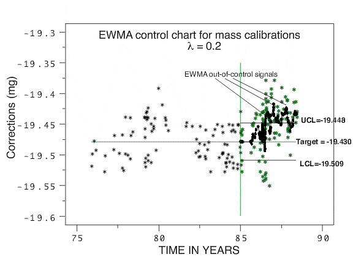

|
2.
Measurement Process Characterization
2.2. Statistical control of a measurement process 2.2.2. How are bias and variability controlled?
|
|||
| Monitoring stage | Once the baseline and control limits for the control chart have been determined from historical data, and any bad observations removed and the control limits recomputed, the measurement process enters the monitoring stage. A Shewhart control chart and EWMA control chart for monitoring a mass calibration process are shown below. For the purpose of comparing the two techniques, the two control charts are based on the same data where the baseline and control limits are computed from the data taken prior to 1985. The monitoring stage begins at the start of 1985. Similarly, the control limits for both charts are 3-standard deviation limits. The check standard data and analysis are explained more fully in another section. | ||
| Shewhart control chart of measurements of kilogram check standard showing outliers and a shift in the process that occurred after 1985 |
|
||
| EWMA chart for measurements on kilogram check standard showing multiple violations of the control limits for the EWMA statistics |
In the EWMA control chart below, the control data after 1985 are shown
in green, and the EWMA statistics are shown as black dots superimposed
on the raw data. The EWMA statistics, and not the raw data, are of
interest in looking for out-of-control signals. Because the EWMA
statistic is a weighted average, it has a smaller standard deviation
than a single control measurement, and, therefore, the EWMA control
limits are narrower than the limits for the Shewhart control chart
shown above.
 |
||
| Measurements that exceed the control limits require action | The control strategy is based on the predictability of future measurements from historical data. Each new check standard measurement is plotted on the control chart in real time. These values are expected to fall within the control limits if the process has not changed. Measurements that exceed the control limits are probably out-of-control and require remedial action. Possible causes of out-of-control signals need to be understood when developing strategies for dealing with outliers. | ||
| Signs of significant trends or shifts | The control chart should be viewed in its entirety on a regular basis] to identify drift or shift in the process. In the Shewhart control chart shown above, only a few points exceed the control limits. The small, but significant, shift in the process that occurred after 1985 can only be identified by examining the plot of control measurements over time. A re-analysis of the kilogram check standard data shows that the control limits for the Shewhart control chart should be updated based on the the data after 1985. In the EWMA control chart, multiple violations of the control limits occur after 1986. In the calibration environment, the incidence of several violations should alert the control engineer that a shift in the process has occurred, possibly because of damage or change in the value of a reference standard, and the process requires review. | ||